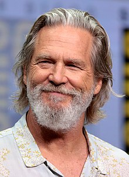
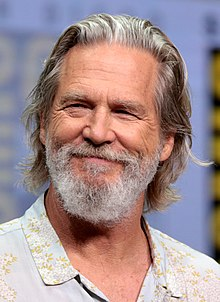

Soundtrack Favorites By Daft Punk
- The Son of Flynn
- The Game Has Changed
- Derezzed
Characters
| Kevin Flynn | Jeff Bridges |  |
|---|---|---|
| Sam Flynn | Garrett Hedlund |  |
| Quorra | Olivia Wilde |  |
| Tron | Bruce Boxleitner |  |
Tron: Legacy is an action adventure movie from Disney that was released in 2010 and based off the original Tron movie. It acted as a stand alone sequel. The movie follows Sam Flynn as he searches for his lost father on The Grid, a digital world created by his father before he disappeared.
Soundtrack Favorites By Daft Punk
- The Son of Flynn
- The Game Has Changed
- Derezzed
Characters
Kevin Flynn Jeff Bridges  Sam Flynn Garrett Hedlund Quorra Olivia Wilde Tron Bruce Boxleitner